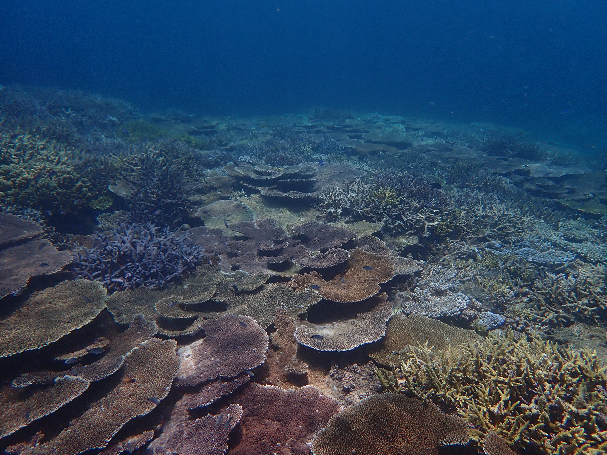
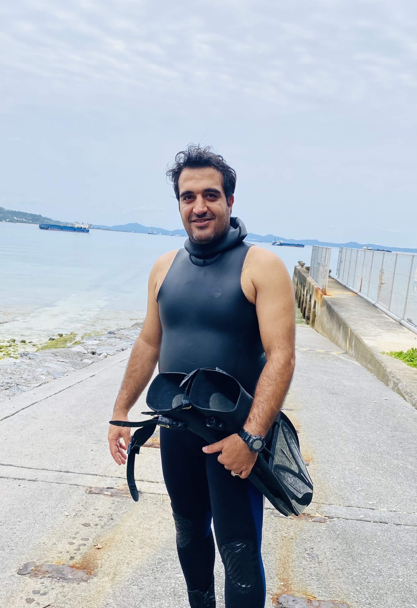
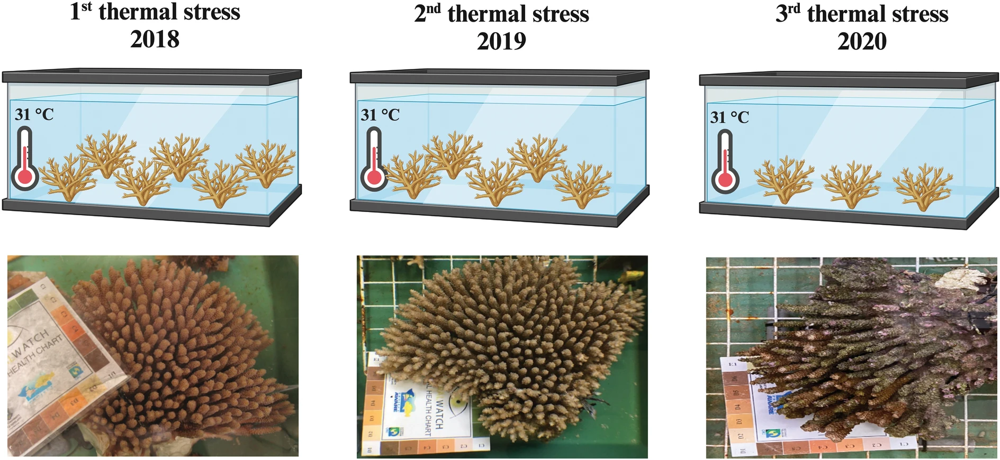
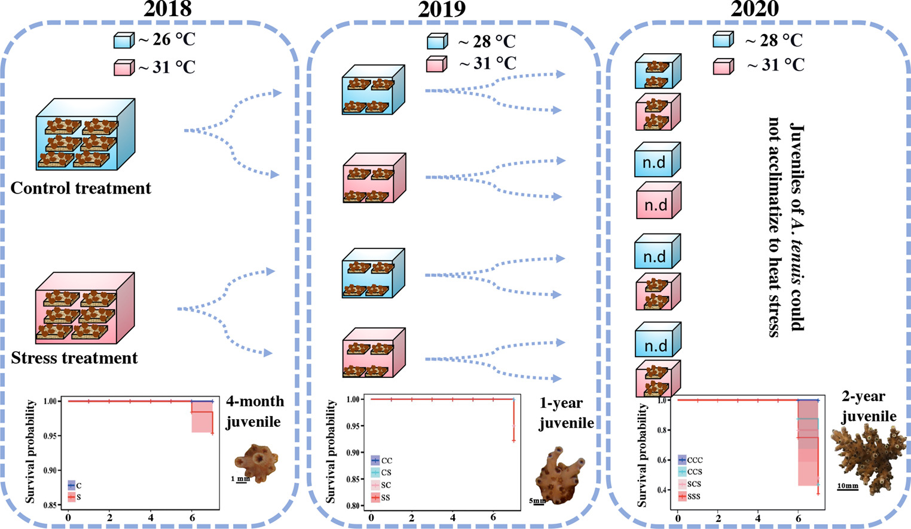
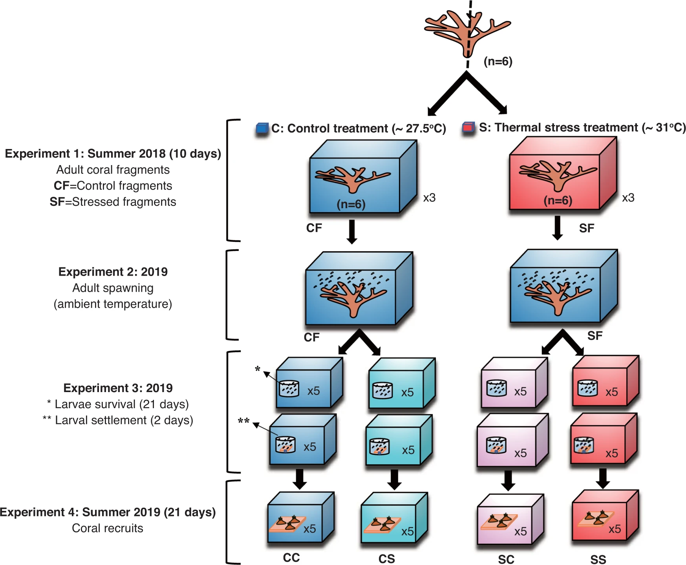
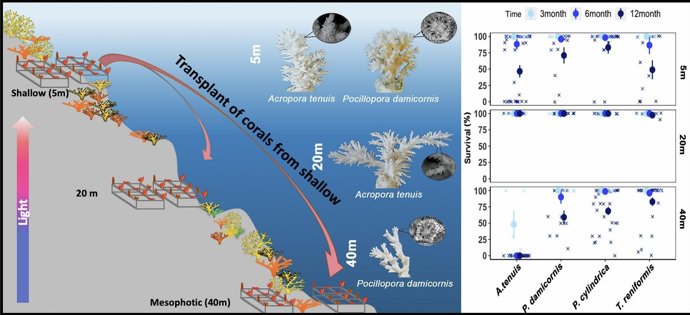
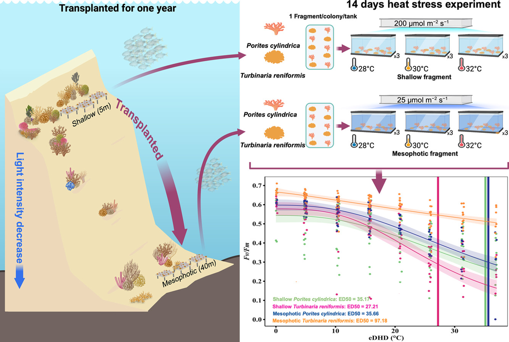

FIELDWORK
Gallery
Photographs and scientific figures from coral reef research. Select an image to view it in full.
PHOTOGRAPHS
Reefs and fieldwork




EXPERIMENTS
Thermal stress and environmental history






DEPTH & ACCLIMATION
Research across depth



